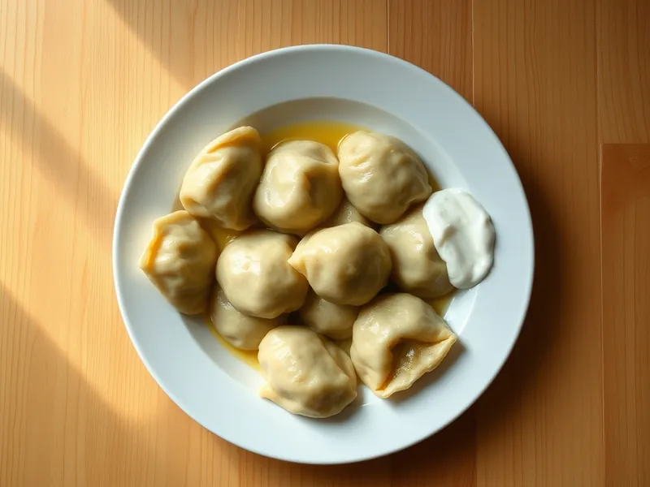

Пельмени домашние с мясом
Тонкое тесто на воде и яйце с сочной начинкой из свинины и говядины
120 мин6 порц.658 ккал на порциюБ 28 · Ж 33 · У 62Русская кухня
Открыть в приложении: порции, таймеры, список покупок
Продукты на 6 порц.
- Мука пшеничная3,3 стак.
- Яйцо куриное1 шт
- Вода1,1 стак.
- Фарш свино-говяжий600 г
- Лук репчатый2 шт
- Соль2 ч. л.
- Перец чёрный молотый1 ч. л.
- Сливочное масло30 г
- Сметана 20%6 ст. л.
Как готовить
- Смешайте муку с 1 чайной ложкой соли, добавьте яйцо и холодную воду, замесите крутое гладкое тесто 10 минут. Накройте плёнкой и оставьте на 30 минут.
- Смешайте фарш с мелко рубленным или тёртым луком, оставшейся солью, перцем и 3 столовыми ложками ледяной воды, хорошо вымесите.
- Раскатайте тесто частями в пласт толщиной 1-1,5 мм и вырежьте стаканом кружки диаметром 6 см.
- Положите на каждый кружок по чайной ложке фарша, слепите полумесяцем и соедините кончики. Получится около 100 пельменей.
- Опустите пельмени в кипящую подсоленную воду, помешайте и варите на среднем огне 7 минут после всплытия, пока фарш внутри не станет серым.
- Выньте шумовкой, полейте растопленным маслом и подавайте со сметаной.
Совет. Лишние пельмени заморозьте на доске в один слой, затем пересыпьте в пакет: так они не слипнутся и хранятся до 2 месяцев. Варите их сразу из морозилки.